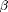

env
Fit the envelope model.
Contents
Usage
stat=env(X,Y,u)
Input
- X: Predictors. An n by p matrix, p is the number of predictors. The predictors can be univariate or multivariate, discrete or continuous.
- Y: Multivariate responses. An n by r matrix, r is the number of responses and n is number of observations. The responses must be continuous variables.
- u: Dimension of the envelope. An integer between 0 and r.
Output
stat: A list that contains the maximum likelihood estimators and some statistics.
- stat.beta: The envelope estimator of the regression coefficients . An r by p matrix.
- stat.Sigma: The envelope estimator of the error covariance matrix. An r by r matrix.
- stat.Gamma: The orthogonal basis of the envelope subspace. An r by u semi-orthogonal matrix.
- stat.Gamma0: The orthogonal basis of the complement of the envelope subspace. An r by r-u semi-orthogonal matrix.
- stat.eta: The coordinates of with respect to Gamma. An u by p matrix.
- stat.Omega: The coordinates of Sigma with respect to Gamma. An u by u matrix.
- stat.Omega0: The coordinates of Sigma with respect to Gamma0. An r-u by r-u matrix.
- stat.alpha: The estimated intercept in the envelope model. An r by 1 vector.
- stat.l: The maximized log likelihood function. A real number.
- stat.ratio: The asymptotic standard error ratio of the stanard multivariate linear regression estimator over the envelope estimator, for each element in . An r by p matrix.
- stat.np: The number of parameters in the envelope model. A positive integer.
Description
This function fits the envelope model to the responses and predictors, using the maximum likehood estimation. When the dimension of the envelope is between 1 and r-1, we implemented the algorithm in Cook et al. (2010). When the dimension is r, then the envelope model degenerates to the standard multivariate linear regression. When the dimension is 0, it means that X and Y are uncorrelated, and the fitting is different.
References
- The codes is implemented based on the algorithm in Section 4.3 of Cook et al (2010).
- The Grassmann manifold optimization step calls the package sg_min 2.4.1 by Ross Lippert (http://web.mit.edu/~ripper/www.sgmin.html).